Freedom Studio
This document serves as a guide for utilizing Freedom Studio. To begin, download Freedom Studio from the https://github.com/sifive/freedom-studio/releases，Ensure to download version FreedomStudio-2019-08-2 ； Note that Freedom Studio operation necessitates the presence of a JDK environment。
JDK Installation
Obtain the JDK from the official
https://www.oracle.com/java/technologies/javase/javase-jdk8-downloads.html, Follow the step-by-step installation instructions:
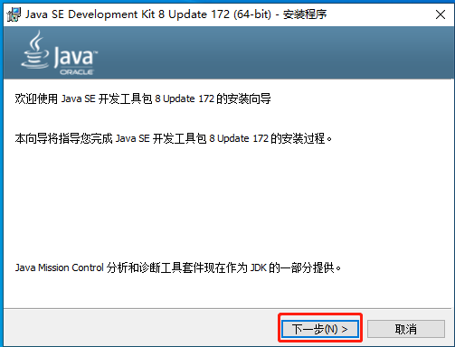
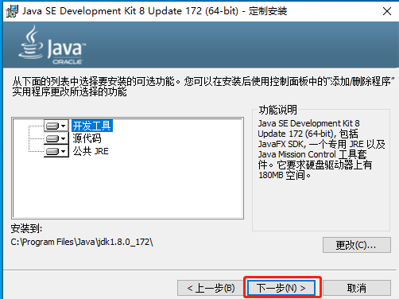
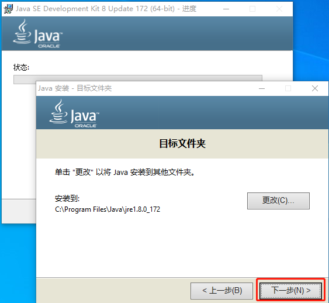
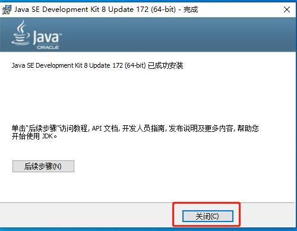
Project Import
Initiate Freedom Studio and access the toolbar. Navigate to File > import Select General > Existing Projects into Workspace to import your project.。
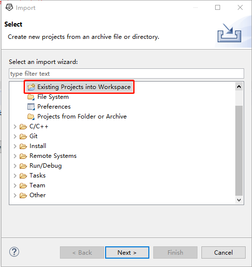
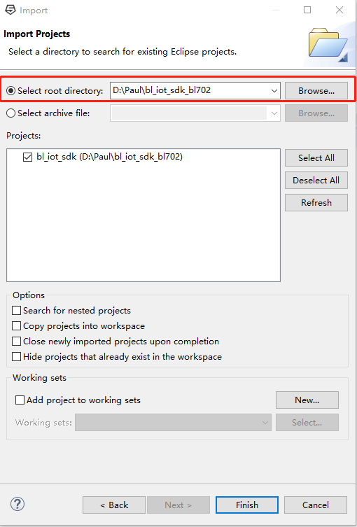
Configuring Launch Files
Locate and choose Debug Configurations within the project. If configurations such as
bl_iot_sdk_debug_freedom_studio_win_bl702are present upon import, this section can be skipped；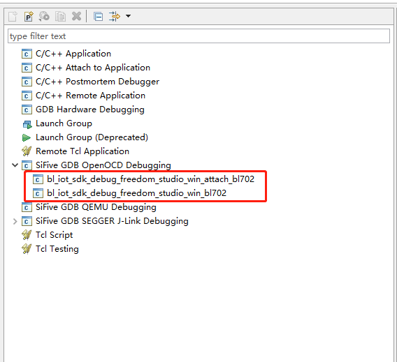
If no launch files are detected post-import, create a new launch file for debugging purposes. This example configures
bl_iot_sdk_debug_freedom_studio_win_bl702；Select Debug Configurations as shown in the figure；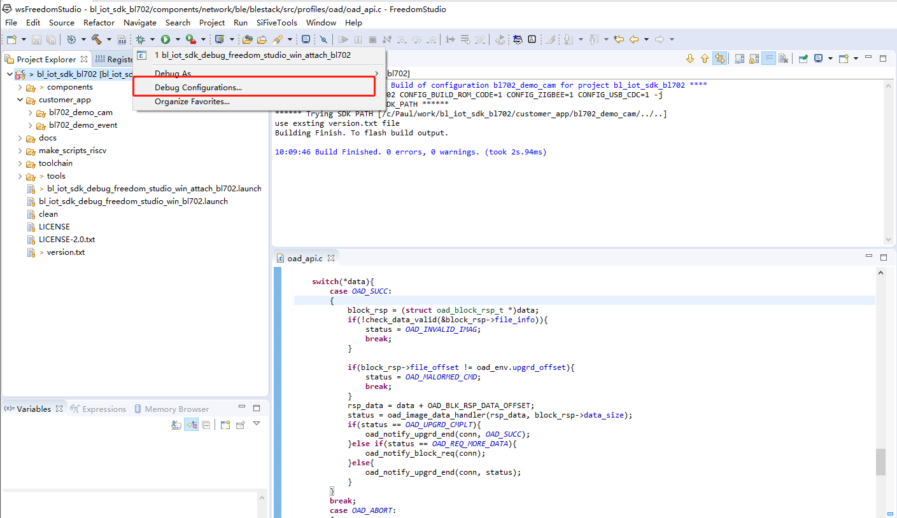
Double-click on SiFive GDB OpenOCD Debugging to create a new launch configuration file and select it as shown；
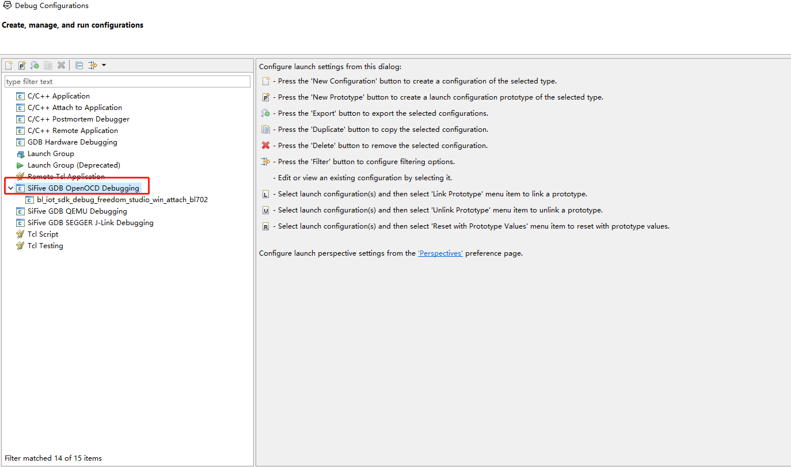
Within the Main tab, include the project's
ELF filerequiring debugging. If unavailable, compile the project to generate it.；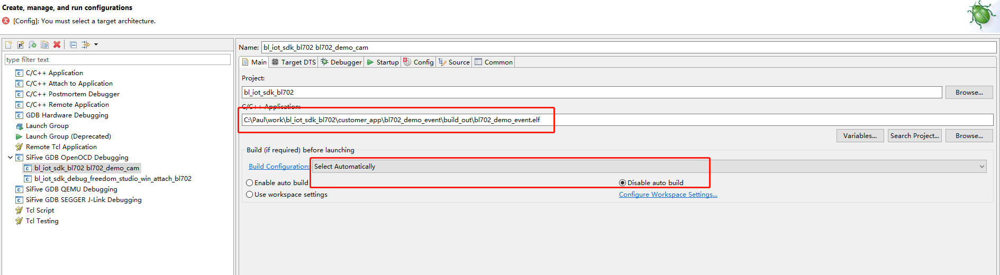
The Target DTS options emain at default settings：
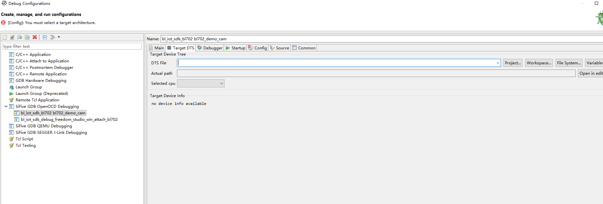
Access the Debugger tab for configuration. Typically, the
if_rv_dbg_plus.cfg,tgt_702_xip.cfg, and702.initfiles are situated in the project's debug directory.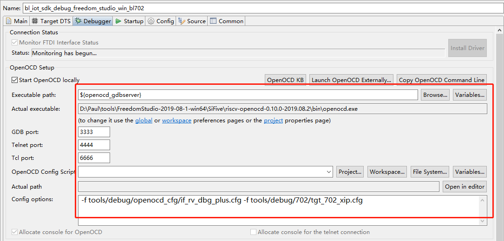
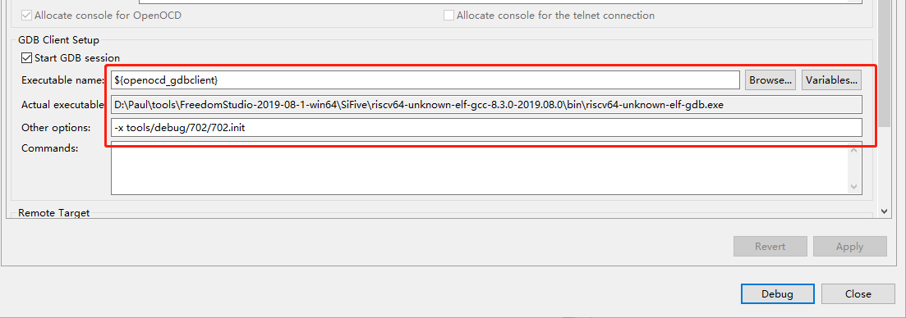
In the Startup tab, select the Pre-run/Restart reset option for automatic device reset upon clicking the Reset button in Debug mode.
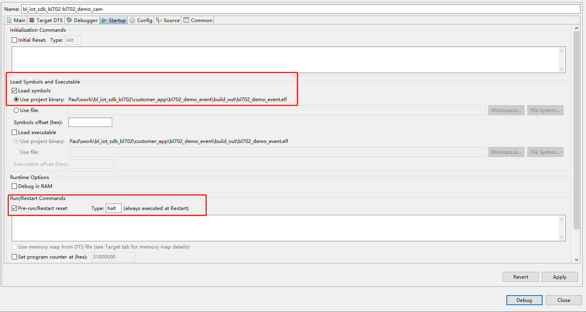
Place a breakpoint at the
bl702_mainfunction where the program halts post-device initiation.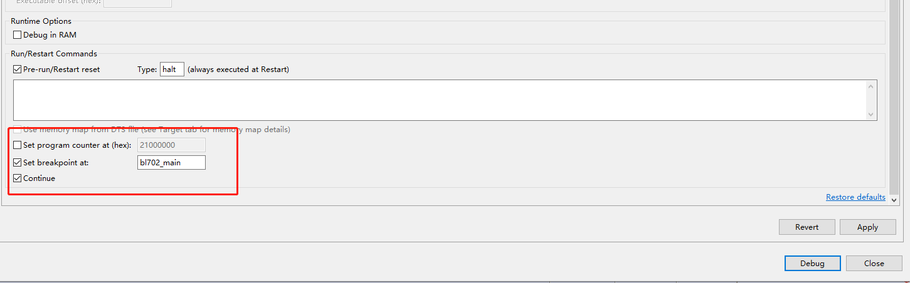
In the Config tab, designate the Target Architecture to riscv:rv32
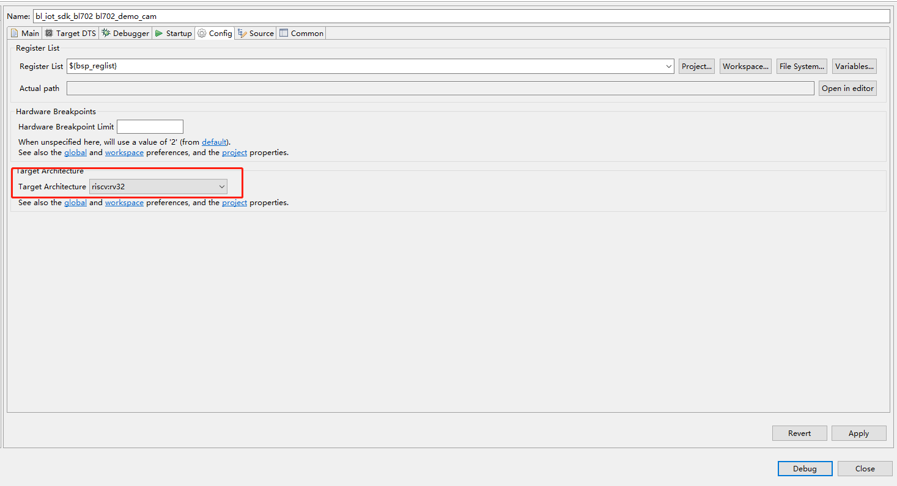
The Source tab should maintain default settings
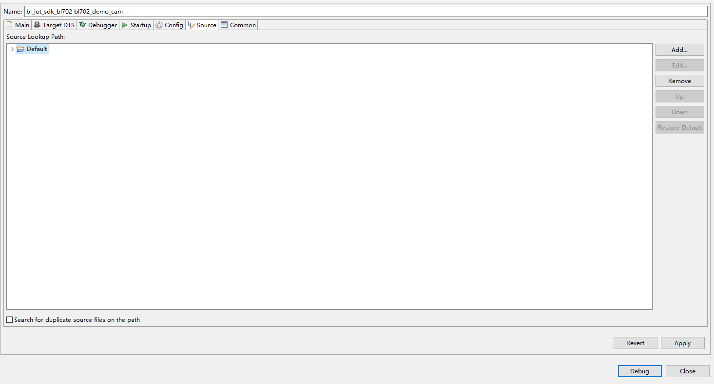
Configure the Common tab accordingly：
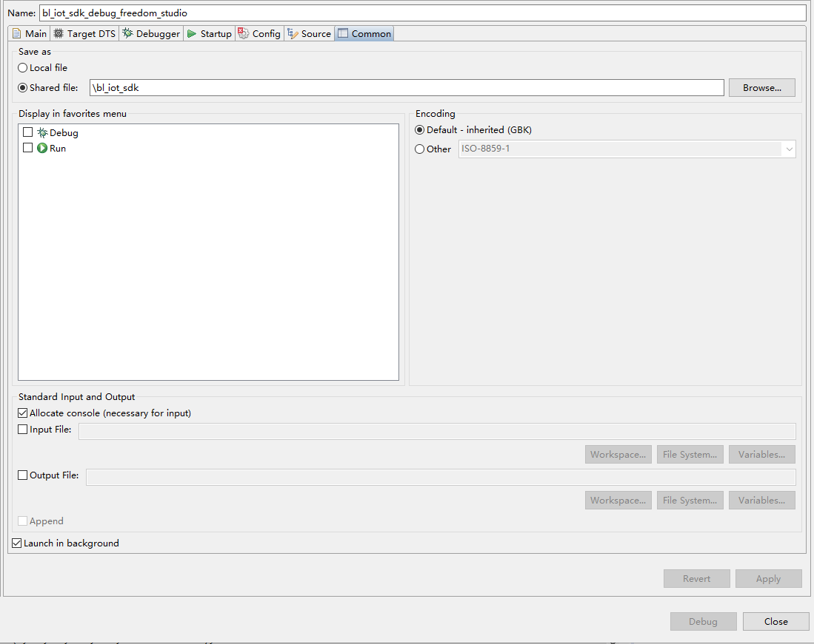
Debug
Connect the Sipeed RV-Debugger Plus to the device via JTAG, the debugger is connected to the computer via USB
{kind=link}
Within
Freedom Studionavigate toDebug Configurations, Click the corresponding Debug button to start debugging:Opt for the
bl_iot_sdk_debug_freedom_studio_win_bl702configuration to reset and rerun the deviceAlternatively, select the
bl_iot_sdk_debug_freedom_studio_win_attach_bl702configuration to connect to the device without resetting it
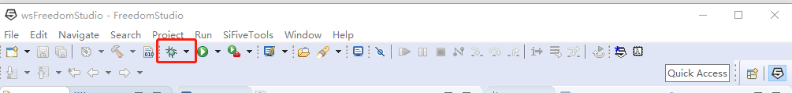
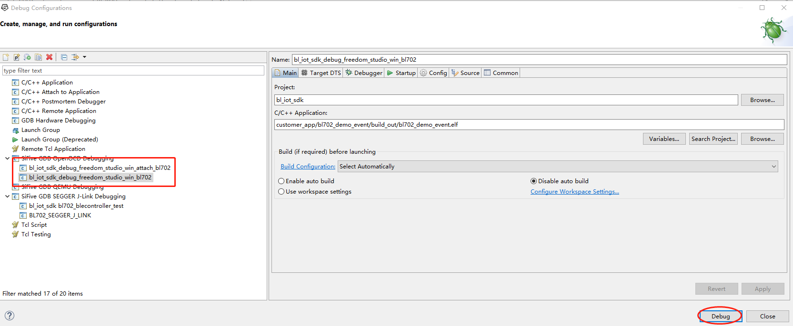
When the
bl_iot_sdk_debug_freedom_studio_win_bl702configuration is chosen, the program stops at thevoid bl702_main()function. Utilize the following buttons for respective functionsStep Into（F5） to delve into a function and continue single-stepping；
Step Over (F6) to advance over a function without entering it, treating the entire call as a single step.
Return (F7) to exit a function, complete the remaining steps, and revert to the calling function.
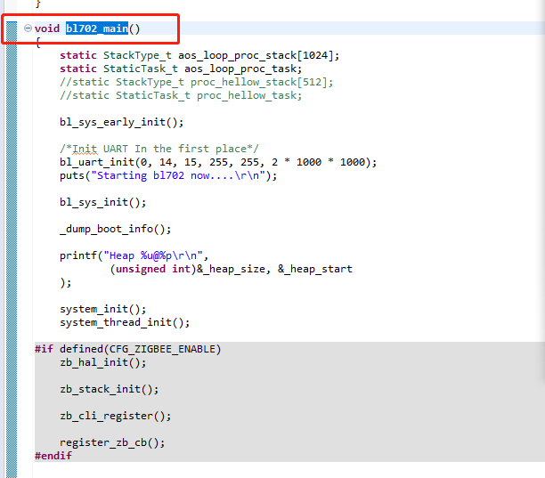